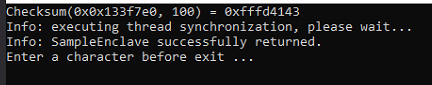

In this document, I will present the practical walkthrough that I performed while learning about Intel SGX. Pubicly available tutorials were followed during the creation of this and appropriate references will be properly cited as needed.
What is Intel SGX?
Intel SGX stands for Intel Software Guard Extension. This technology enables the applications to execute code and protect secrets in their own trusted environment, which gives the developer direct control over the application security. (link).
This means the application secrets are still protected when the application itself, Operating System and the BIOS is compromised. This way, even when the attacker has the full control over the system, the secrets are still protected.
How is this achieved?
Intel creates isolated memory regions, called enclaves of code and data in the physical RAM of the system. These memory regions are non-addressable and are encrypted. These regions of memory are thus protected regions where an application can work without fear of exposing the secretss.
Anatomy of Application
An Intel SGX application is built with two parts: (a) Trusted Part and (b) Untrusted Part.
Majority of an application is the Untrusted Part of the code. When an application needs to work with a secret, it creates an enclave that is placed in trusted memory. Then a call to trusted function is made. This trusted function is created by the software developer to work inside the enclave. This function call runs the Trusted Part of the application which sees the enclave content, code and data, as clear text. The code can return from the Trusted Part to the Untrusted Part.
Some of the pre-reqs for Intel SGX to work in a system are listed below. The contents are derived from (link).
The CPU must support the Intel SGX instructions.
The system BIOS must support Intel SGX.
Intel SGX must be enabled in the BIOS.
Intel Platform Software PSW must be installed in the system.
Intel SGX is supported from the core machines of 6th Generation and onwards while Xeon E3 v6 for server processors.
For any application to make use of Intel SGX, application developer has to make use of this functionality in their code. Any application developer has to follow the listed sequence of actions:(link)
Detect if Intel SGX is supported by CPU and BIOS.
Determine if the Platform Software has already been installed. Install if necessary.
Determine if Intel SGX has been enabled on the system, and attempt software enable if it has not.
Applications however follow a different sequence:
Detect if Platform Software has been installed.
Determine if Intel SGX has been enabled and attempt software enable if it is not.
The BIOS in your system provided by the OEM may have support for Intel SGX in three modes:
Enabled:SGX is available
Software Controlled:SGX is enabled but should be available only when the software opts-in explicitely. This may require a reboot. SGX, however, cannot be disabled via software.
Disabled:SGX is disabled and cannot be used by the applications. It can also not be enabled via software as in Software Controlled.
When Intel SGX is enabled, the processor reserves upto 128MB of memory in RAM as Processor Reserved Memory (PRM). This memory is used to hold Enclave Page Cache (EPC). This memory that is set aside for the use of EPC is not available for other applications. The Software Controlled Enabling allows for an opportunity where SGX is enabled, but does not consume the important RAM resource. If the user wants to make use of SGX, s/he can use software opt-in method.
The practical walk-through for detecting SGX in a system is presented in (later section).
As we saw earlier, an application enabled with Intel SGX has two parts: (a) Trusted Part and (b) Untrusted Part. The Trusted Part consists of the enclave while the Untrusted Part is the rest of the application. The enclaves are conisdered trusted because they cannot be modified once they are built. Any modification will be detected by the CPU and the enclave wont load. (link)
Inorder to design the application for Intel SGX, we need to partition our code, i.e. we need to identify which code belongs to enclave, which code belongs outside of it and how the trusted and untrusted part of the codes interact.
Specifically, following actions are to be done:
Identify the secrets: These are the data that should be protected from exposure.
Identify the source and sink of secrets: Map out the flow of secrets. This means identify where the secrets are coming from and where they will be going.
Identify the enclave boundary
Tailor the code for enclave.
It is important to keep in mind that the enclaves should be destroyed when the secrets are no longer needed. Call to enclaves incure performance penalty. Thus while operating secrets, it is efficient to make a single call to enclave that does a lot of work than making several call that does small works.
Sometimes the secret may need to be stored outside the enclave. This is because the enclave is destroyed under many different conditions, and the contents are lost. Thus CPU provide a mechanism called Data Sealing, which allows the data secrets to be stored in untrusted memory.
Storing to the untrusted memory is done by encryption of the data where the key is derived from the CPU. This sealed or encrypted data can only be decrypted on the same system it is encrypted.
Sealing can be done based on one of two policies: (a) MRENCLAVE (b) MRSIGNER. Choice of these policies affect the derivation of encryption key.
MRENCLAVE: Derives key that is specific to that enclave on that system. That exact enclave on that particular computer can only unseal the data.
MRSIGNER: Derives key that is specific to the developer's signing key on that system. This allows the data to be unsealed by another enclave that is created by the same software vendor on the same system. This allows the data to read by later versions or builds of the enclave and application.
Use of Intel SGX debugger can be done for debugging. However, enclaves that are built in debug mode should never be deployed. It should be built in release mode for deployment. But this build cannot be debugged under any circumstance. Inorder to debug, the Intel SGX debugger should be selected in the Project Settings, otherwise the enclave code will be skipped by other normal debugger.
Enclave Definition Language
One of the fundamentals of Intel SGX is that the enclave secret can only be accessed by code that is inside the enclave. An interface function is need to execute the code.
Each enclave or the trusted code has one or more entry points called enclave calls or the ECALLS. These provide entry points to the enclaves from the untrusted application code. An enclave can also have outside calls or OCALLS which allow enclave functions to call out to the untrusted application and return to the enclave. These ECALLS and ECALLS make an interface for the enclave.
These functions are not, however, run directly by the application. Special CPU instructions are required to make these calls. (link). The SDK abstracts these low level details. A tool called EDGER8R automatically generates proxy functions named after the ECALLS and OCALLS. This makes it easy for applications to invoke them as a C function. For the generation of these proxy functions, the EDGER8R reads an Enclave Definition Language(EDL) file.
An EDL file is similar to the C- header file with function prototypes. This file also contains two sections: Trusted Section and Untrusted Section. The trusted section contains the definition of ECALLS functions, and OCALLS functions are defined in the untrusted section.
All the ECALLS that are to be invoked by the untrusted applications should be defined as public. Every enclave must have at least one public ECALL. Any function in the trusted section of the EDL file without the keyword public can only be executed from within another OCALL.
When an ECALL or OCALL is made, the parameters are marshalled between the trusted and untrusted memory. Thus, changes made inside the ECALL or OCALL is not propagated back to the caller. Parameter passed by value means marshalling is one way. But in case of parameter passed by reference, a complete description of the marshalling should be done. Each pointer parameter must be preceeded by direction describing keywords in a square brackets. The number of elements to be marshalled can also be mentioned, which is optional, however. Keyword [in] before the parameter name means the data parameter should be marshalled into the ECALL or OCALL while [out] means the data should be marshalled out of the ECALL or OCALL back to the calling function. If the data marshalling is needed in both the directions, [in, out] can be used.
By default, only one element is supposed to be marshalled of the size indicated by the parameter type in a ECALL or OCALL. To marshall more data, additional parameter value count can be supplied, as [in, count = 10]. If the number of data item is not certain during compile time, another parameter variable can be used for the count value as shown below.
When passing string however, the count value should be replaced by the keyword string.
trusted{
/*ECALLS definition follows*/
/*
Here data items are marshalled into the function.
Items marshalled are 10 int32_t items
*/
public int my_ecall([in, count = len] int32_t* my_array, size_t len);
/*
Following ecall can only be called by another OCALL
*/
int ecall_private(int val);
/*
Illustration of string parameter
*/
public int my_ecall2([in, string] char* name);
}
Sometimes it is necessary to pass data of void* type to the ECALL or OCALL. The tricky thing about void* type data is that the size is not known. Thus the total size of the data to be marshalled cannot be calculated. Thus EDL provides another keyword called size. This keyword parameter size indicates the size of each data element and combined with count, it helps to compute the total size of the data to be marshalled.
/*
here 32 8-byte values will be marshalled into the ECALL
both count and size parameter can be represented by a function parameter variable
*/
public int my_ecall([in, count = 32, size = 8] void* my_array);
Only public ECALL can be called by untrusted functions. These ECALLs are called the root ECALLs.
By default, OCALLs are not allowed to call any ECALL. However, the ECALL that are not declared with keyword public can be called from OCALL. However, for this to happen the OCALL definition must have the name of ECALLs that it is allowed to call. This is done using a key word allow as shown in code below:
trusted{
/*ECALLS definition follows*/
/*
Here data items are marshalled into the function.
Items marshalled are 10 int32_t items
*/
public int my_ecall([in, count = len] int32_t* my_array, size_t len);
/*
Following ecall can only be called by another OCALL
*/
int ecall_private(int val);
/*
Illustration of string parameter
*/
public int my_ecall2([in, string] char* name);
}
untrusted{
/*define OCALLS here*/
/*
Following OCALL can only call ecall_private() ECALL
*/
size_t get_msg() allow(ecall_private);
}
Getting Started
The following contents are derived from the official Intel Webpage at (link). Please follow that link for official tutorial. The tutorial is based on MS Visual Studio 2015 on a 64-bit Windows OS. The setting for this practical walkthrough is based on MS Visual Studio 2017 on a 64-bit Windows OS.
The first thing we need to do is to find if the CPU we have supports Intel SGX. For this please find the generation and family name of the processor. For me, the processor was Core i7-6700. This means, it is i7 processor. 6 in 6700 indicates the processor is 6th generation Intel processor. After you have found these information, go to www.ark.intel.com and search for the processor type. After you have located your processor, at the bottom of the specifications page for that processor, you should see a section for Security and Reliabilityfeatures. Intel SGX is one of the security feature. If Intel SGX is available, it should be mentioned as Yes with Intel ME.
We will study about Intel ME or Management Engine in a different series of tutorial.
The next step is to see if Intel SGX is supported in BIOS. You can manually check to see by going to the BIOS menu for this procedure. Please follow the tutorial at (this link). Another way is by using Intel provided tool. Please follow the procedure at (this link) for properly detecting that Intel SGX is available.
In order to proper detect the availability and support for Intel SGX, the application developer should perform detection during the installation phase (i.e. when the final product is rolled out) and from within the application itself. In this research, we will focus on the checking from application rather than from the installer.
Following are the steps that are to be performed after determining that SGX is supported in the system:
Check if PSW is installed. PSW is the Platform Software Package. PSW includes:
Runtime Libraries
Services to support and maintain trusted compute block on end user system and manage critical Intel SGX operations as SGX.
Interface to platform services such as the trusted time and monotonic counters.
Based on installation:
If not installed, the part of application that supports the non-SGX code should be run.
If installed, go to step 2.
Call sgx_enable_device() to ensure that the software opt-in has occured. Check the return value to determine whats next.
If the result indicates SGX is enabled, application may execute SGX code.
If not and the code indicates a reboot is required, the indicated manual actions should be performed.
If SGX could not be enabled, non-SGX code path should be used.
Since we are yet to install the software components, we will follow-up in this after we make installation.
Installation
This section shows the installation of the important components required for software developement with Intel SGX. At this point of time, we know that Intel SGX can be enabled and used in our CPU with Intel Management Engine (Intel ME). In the follow section, we will present installation of all the required softwares for Intel SGX to work. The material is derived from (this link).
The required softwares for installation can be found at this link. Download the archived file and extract the contents.
Inside the folder named ME_SW_MSI, there should be SetupME.exe. Double click this installer, and follow the default prompts to get this installed. After the process is complete, you can go to the Control Panel->Program and Features to the Intel Management Engine Components.
For Windows machine, the suggested installation is MS Visual Studio Professional Edition or higher. This might not be an option for non-acedamic personal purpose. However, any student can contant their university to provide them with the professional edition of MS Visual Studio.
I had my hands on at MS Visual Studio Enterprise Edition 2017 for this research.
To install the Intel SGX Software Development Kit (SDK) and PSW, you must register and obtain the installation from the Intel Website at . It should not take more than 5 minutes to get everything going.
Please make sure that you have installed Visual Studio before installing SGX SDK.
The .exe files downloaded can be used for installation of the SDK and PSW.
The installation can be verified by looking into the control panel's program and features to see if SGX and PSW can be found listed in there.
Now that everything is set up properly, let us get started with opening and running an example solution that comes with the installation of SGX. Following are listed following this link
Open Visual Studio.
Go to File>Open>Project/Solution.
Navigate to the directory that has the sample examples. C:\Program Files (86)\Intel\IntelSGXSDK\src\SampleEnclave
Click on SimpleEnclave.sln to open the solution. But, make sure that Visual Studio is open with Admin previleges.
Set the Solution Configuration to Debug mode. Solution Configuration can be changed through a drop down menu below the menu bar next to Solution Platform drop down list.
The project contains two applications, App and Enclave. We have to make sure the compiler and debugger settings are properly set. Go to Project>Properties. The option in Platform ToolSet should be Visual Studio 2017 (as it was already for me). Go to debugging, and make sure Intel SGX Debugger is selected.
Inorder to build the simple enclave, Press Ctrl+Shift+B.
Possible Error: For me, I had to retarget both the project due to the Windows SDK mismatch. Inorder to retarget the project, right click the name of project in Solution Explorer and select Retarget Project option for each of the projects. This fixed the error.
Following is the sample run:

This verifies that Intel SGX is installed and configured successfully.
Project Creation
The major steps in creating an enclave projects are:
Creating Intel SGX Project
Configure Enclave Settings
Import EDL file into untrusted application project
In order to create a new enclave project, follow the steps listed below:
Go to File menu. Select New>Project. This will open a new window. Select Intel SGX Enclave Project from the list under Visual C++.
Name the project and select the folder for project creation.
Click Next and check the settings for the enclave. For the project type, it requires us to choose of the two options: Enclave or Enclave Library. Snce we are building an enclave project, we will select Enclave.
If you have your provate key, you can navigate to your PEM file as well. Since I do not have any provate key as of this moment, Visual Studio will create one for me. VS provided key for enclave for one step signing process is supported for ony Debug, Simulation and Pre Release mode. For release mode, you must provide a key and use two step signing process.
Click Finish once done. The project will be created.
Now we need to manage the settings for Enclave. These settings will be saved in a Enclave Configuration File (ECF). In order to change the settings, right click on the project name in soluton explorer. Select Intel SGX Configuration > Enclave Settings. This will open a window. This includes settings like Product ID, ISV SVN, Thread Stack Size, Global Heap Size, Thread Number, Thread Bound Policy. We will leave them as default as we do not know much about them.
In the same window as above, selecting Advanced will open a new window. It is here you can select settings such as to bar debugging. Other settings are for future usage. We will leave them as default unchanged. Let us click OK on both advanced and basic settings.
An enclave file \ is already created in Source File folder. This is where we will add our ECALLS and OCALLS
Now we can go ahead with our project coding. We will discuss about it in below section after some time. But first let us talk about signing. (The first coding example will be followed from this link.)
Signing: Signing an enclave is a process that produces a signature containing enclave properties. Once an enclave is signed, any modifications can be detected and can be blocked by Intel SGX at load times. For Simulation, Debug and Prerelease, you can use one-step signing: using private key in the development platform. But for release, two-step signing must be used.
One-Step Signing: Signing an enclave using provate key on build platform/system
Two-Step Signing: Signing an enclave using a private key stored in a secure facility or platform.
Generate enclave signing material and take the material to the signing facility/platform
At the signing facility/platform, sign the file containing the enclave signing material.
Take the resulting file (.hex) back to buiild platform.
On the build platform, sign the enclave using signature file and public key.
Here we will create our first Enclave project. The contents are derived from this link.
As of this moment, we have a solution that has an enclave project. But we have not define anything inside the project, so let us define some functions and make them OCALLS or ECALLS. All the examples are derived from this link.
In the enclave source file, Enclave_1.cpp, we will create following functions:
enclaveChangeBuffer(): This function copies a constant string to the passed in char buffer
enclaveStringSave(): This function copies the passed character buffer to the string in the file
enclaveStringSave(): This function copies the string saved to the buffer passed to the function
enclaveSaveInt(): copies the input int passed to the global int in the file
enclaveLoadInt(): returns the int from above function.
All our functions are ECALLS here. So in the .edl file we will declare all of them in ECALLS.